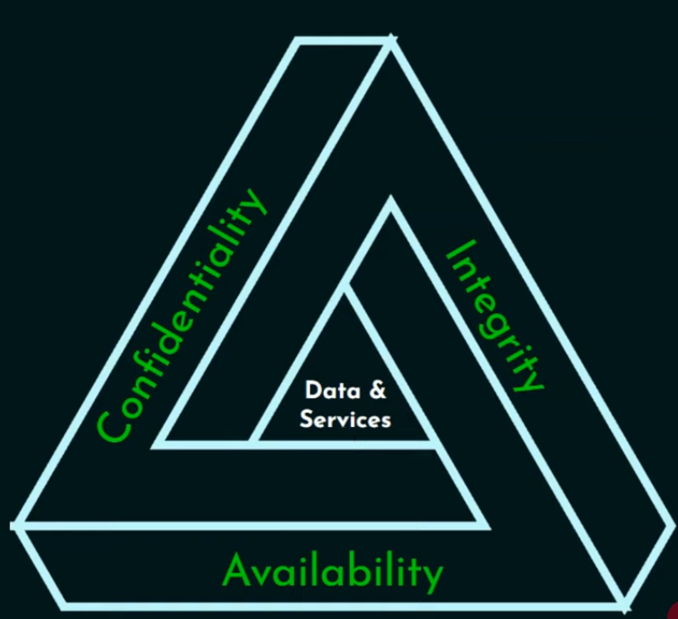
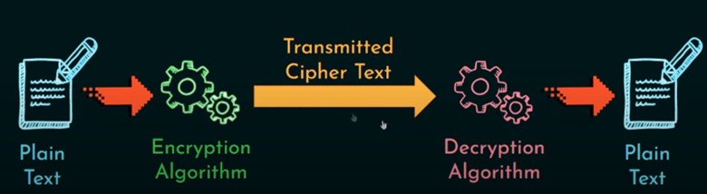
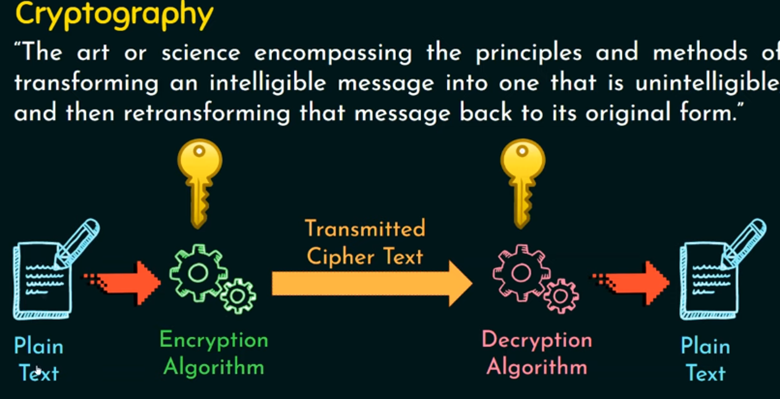
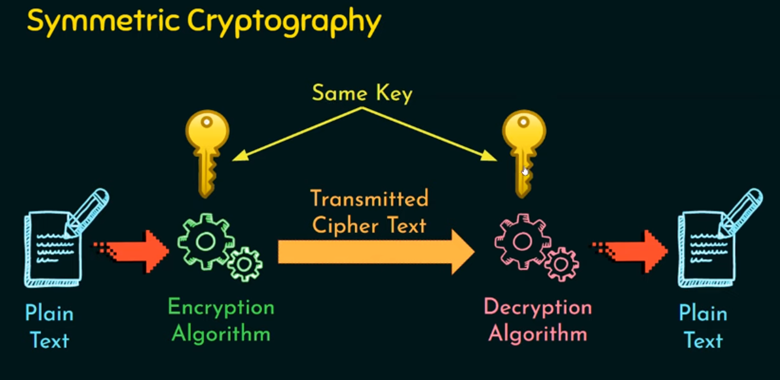
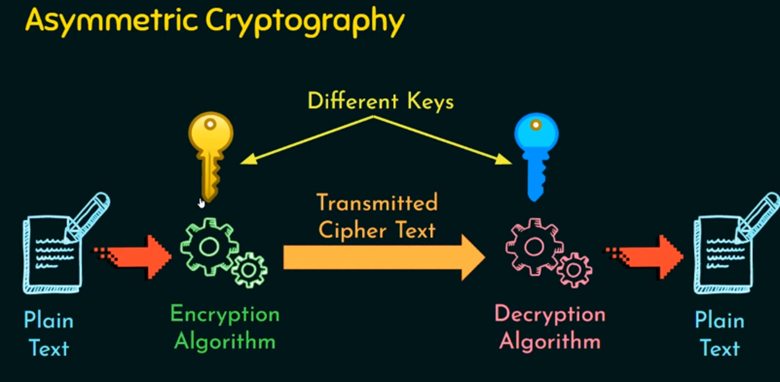
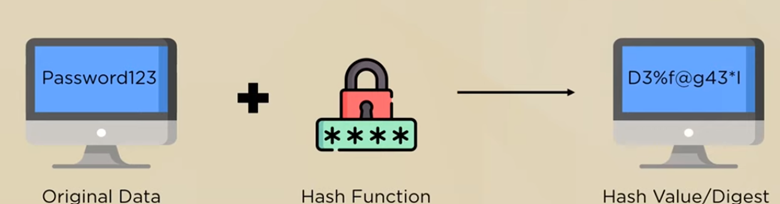
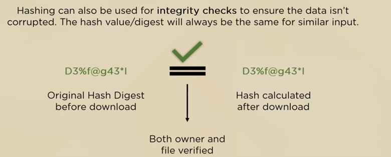
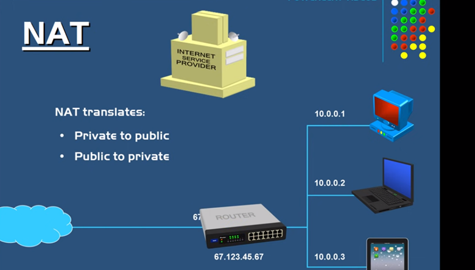

La octava semana fue la ultima semana de Networking, se trabajaron conceptos de Seguridad en redes y VPN´S.

Computer Security
La protección otorgada a un sistema de información automatizado en orden de alcanzar los objetivos aplicables de preserver la integridad, disponibilidad y confidencialidad de los recursos de un sistema de información, incluyendo Software, hardware, firmware, información y telecomunicaciones.
Triada CIA

- Confidenciality: Significa que un mensaje o la información enviada entre un emisor y un receptor solamente está disponible para los implicados. Es decir, únicamente los interesados en una información son los que tienen acceso a la información. Se utiliza Encriptación, más común es el AES 256, 512, RC4, DES, 3DES
- Integrity: En resumen, lo recibido es lo que se envió en un principio, la integridad del mensaje se debe asegurar por todo el trayecto sin perder y/o corromper información. Asegurar que no hay modificaciones en el mensaje.
- Availability: Se refiere a garantizar a poder acceder de manera rápida a los recursos en los cuales se encuentra la información, aún cuando se encuentra bajo algún tipo de ataque por hackers.
Niveles de impacto en brechas de seguridad
- Low:Es cuando se tienen daños pequeños que no afectan en gran medida al funcionamiento de un servicio.
- Medium:Es cuando se tiene una afectación importante a nivel de servicio organizacional
- High:Es cuando todo se cae, se tiene una consecuencia catastrófica que no permite seguir funcionando bajo ningún tipo.
Criptografia
Criptografía es el estudio o la práctica de técnicas de seguridad en la comunicación debido a comportamiento adverso. Generalmente es la construcción y análisis de protocolos que evitan que terceros puedan acceder o leer mensajes confidenciales.
Encriptar un mensaje es un proceso llevado por un algoritmo de encriptación, el cual es en el encargado de cifrar un mensaje para ser enviado hacia el usuario destino. El recepto tendrá un algoritmo de decryption que permitirá desencriptar el texto a un formato más legible. Para enviar un mensaje encriptado es necesario también enviar la llave o la key que permite al algoritmo de desencriptación poder convertir el mensaje al formato deseado.
Tipos de Criptografia
Existen dos tipos de criptografía, la criptografía simétrica, la cual cuenta con una Key privada utilizada para cifrar y descifrar el mensaje en el algoritmo. Las llaves suelen ser de tamaños tal que no pueden ser leídas fácilmente por un humano.
El segundo tipo de criptografía es la criptografía asimétrica, donde existe una key publica o llave publica, la cual es diferente tanto del emisor como del receptor.
Esquemas de Encriptación
- Unconditionally SecureNo importa cuantos textos cifrados un atacante pueda obtener, será imposible para él conocer la información descifrada
- Computationally Secure Es cuando el esfuerzo y el tiempo empleado necesario para descifrar una información es demasiado alta para poder descifrar el mensaje a tiempo.
Hashing
Hashing es el proceso de modificar o alterar la información más allá del reconocimiento. Están diseñados para ser irreversibles. Pasamos como input la información a una función hash para calcular el Hash value o digest.
Hash también puede ser utilizado para chequeos de seguridad comprobando que la información no ha sido alterada o corrupta. El hash value debe ser igual tanto el stored como el de input.
Las funciones HASH son funciones matemáticas que permiten crear un hash value a partir del input, teóricamente se diseñan para ser irreversibles, además de otorgar siempre un mismo valor para un mismo input.
NAT
NAT, significa network address translation, se utiliza a nivel de routers y es utilizado para convertir un set de direcciones IP a otro set de direcciones IP. Esto con la intención de preservar el limite de direcciones IPv4 públicas.
Existen dos tipos de direcciones IP, las publicas y las privadas. Las direcciones ip publicas, se encuentran en internet y son necesarias para poder acceder a internet. Existen alrededor de 4 Billones de direcciones IP publica y son por tanto limitadas. Las direcciones IP privadas son de uso interno, no se encuentran registradas en Internet y por tanto no sirven para acceder a este.
Hay distintos tipos de NAT, por ejemplo, si en una topología tenemos dos routers conectados, ambos routers intentarán realizar traducción, y eso es algo malo, por tanto una forma de solucionarlo es mediante port-forwarding que es designar un puerto a un dispositivo y todo el trafico vaya hacia dicho dispositivo. Una mejor forma de solucionar este problema es por medio de colocar el modem en modo bridge y que el router realice la traducción.
IPSec
IPSec es utilizado para Site-to-Site VPN y TLS es utilizado para Remote Access VPN. Para poder utilizar VPN Remote Access se debe pedir permiso desde el dispositivo a la red para poder realizar la conexión, por ejemplo cisco anyconnect. Full túnel, significa que una vez realizada la conexión todo el trafico será forwarded a la red corporativa. Split-tunel, significa que solamente el tráfico destinado a la red corporativa será forwarded por la vpn, ell resto del trafico será enviado por aparte.